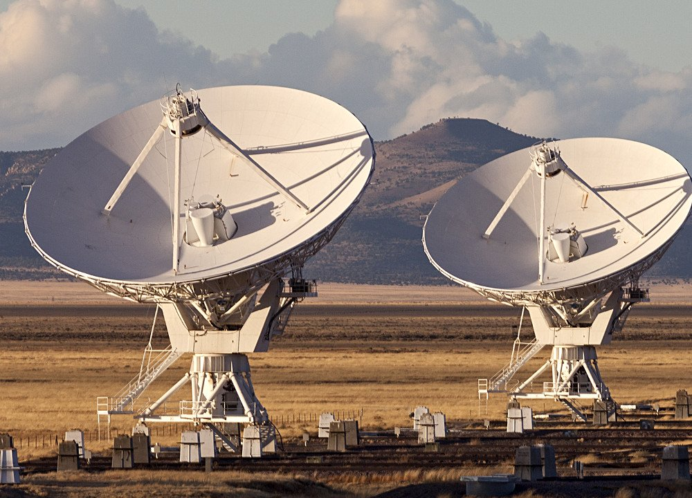

SPECTROSCOPE
เครื่องยกแสง (Spectroscope) บอก คุณสมบัติได้ว่า ดาวนั้นมีอุณหภูมิเท่าใดประกอบ ด้วยธาตุอะไร ในที่สุดเขาได้แบ่งดาวฤกษ์ตาม สเปคตรัมของมันเป็น 7 ลำดับ เรียงตามตัวอักษร ว่า O B A F G K M โดยการกำหนดลำดับของพวก O เป็นพวก สีน้ำเงิน-ขาว (Blue white Stars) มีอุณหภูมิที่ผิวราว 35,000 เคลวิน (Kelvin) ในแถบสเปคตรัมมีเส้นสว่างของไฮโดรเจน ตามลำดับ M มีสีส้มแดง อุณหภูมิที่ผิวราว 3,000 เคลวิน เป็นต้น